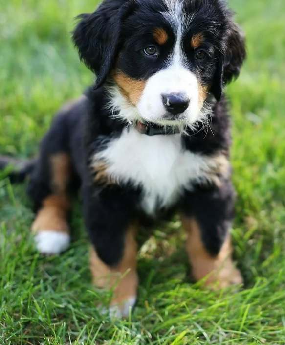

Фильтры
Фильтры можно применять практически ко всем объектам. Но чаще их применяют к изображениям с использованием псевдокласса hover
Рассмотрим синтаксис фильтров:
img:hover {
filter: blur(5px);
}
- img - объект к которому будут применяться фильтры. (картинка)
- hover - псевдокласс
- filter - оператор объявления фильтра
- blur - тип фильтра
Какие фильтры бывают:
- blur - этот фильтр применяет к изображению эффект размытия. величина размытия указывается в пикселях. большее значение увеличит эффект размытия
- brightness - влияет на яркость. 0% - полностью черное изображение 100% - оригинал. можно утсановить 130% изображение будет ярче оригинала
- contrast - влияет на контраст. 0% - полностью серое изображение 100% - оригинал, 130% - более контрасное
- greyscale - делает изображение черно-белым. 0% - оригинал 100% - полностью черно-белое изображение
- hue-rotate - применяет к изображению поворот оттенка. входящий параметр в deg (пример 200deg)
- invert - применяет инверсию (негатив) к изображению. входящий параметр в %
- opacity - прозрачность. 0% - полностью прозрачная 100% - оригинал
- saturate - изменяет насыщенность картинки 0% - ненасыщенная 100% - оригинал 130% - насыщеннее оригинала
- sepia - применяет сепию к изображению
ПРИМЕРЫ
